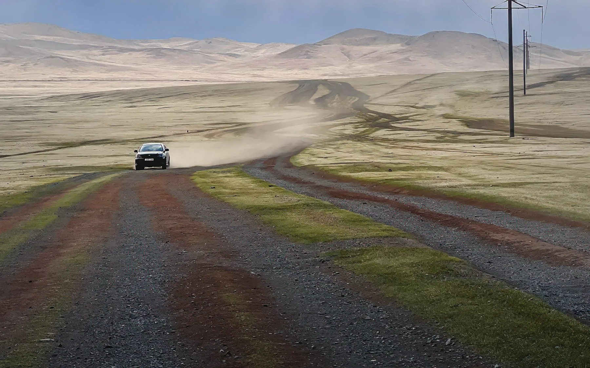
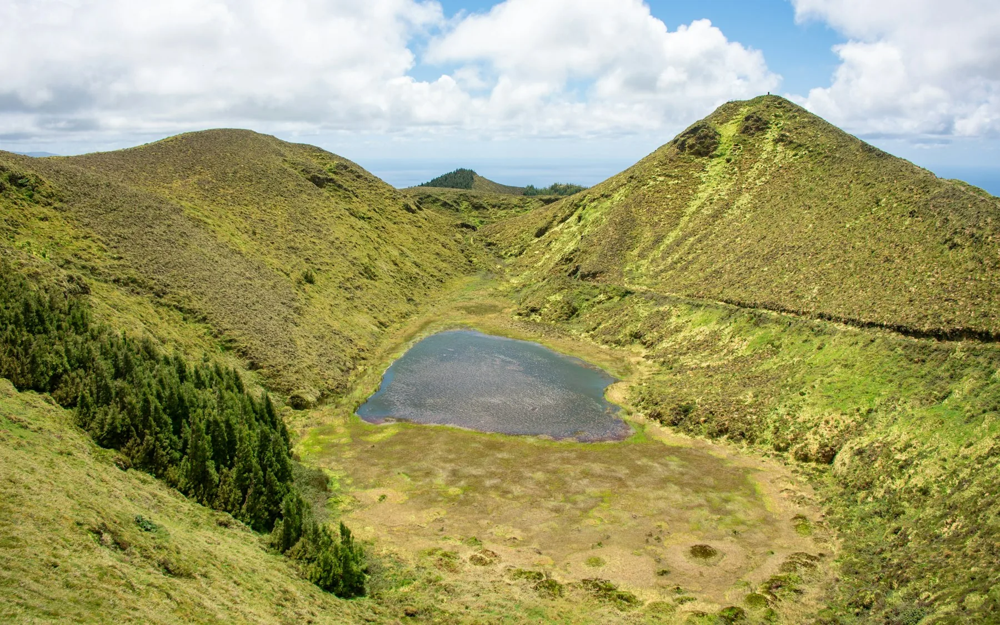
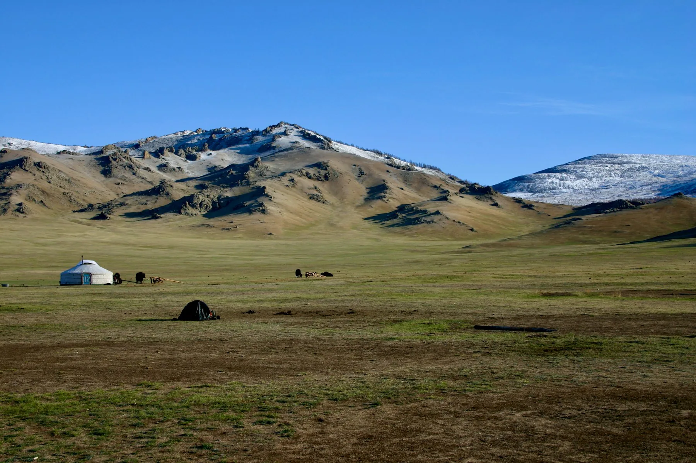
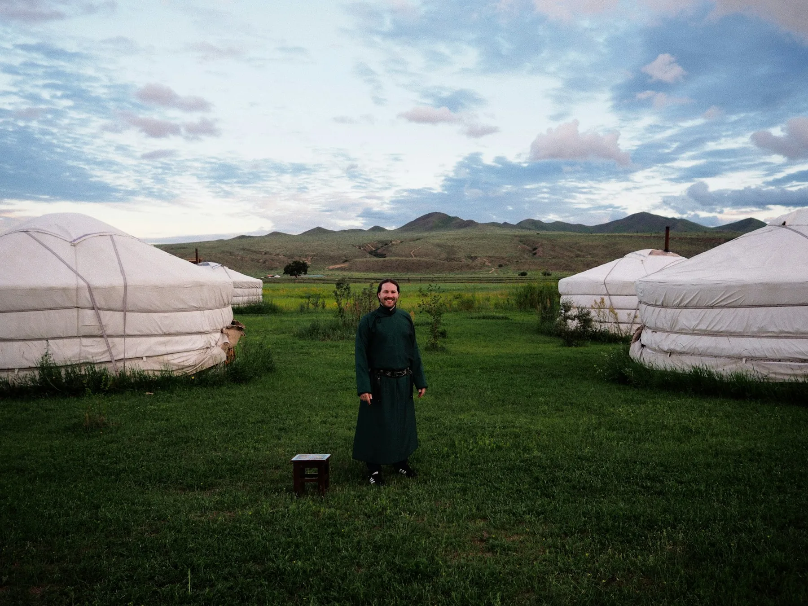
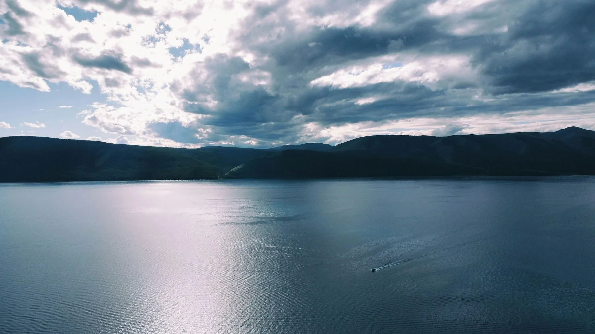
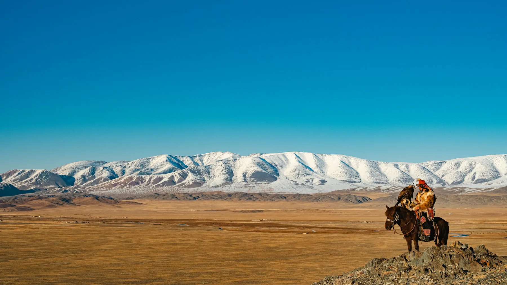

Destination
Mongolia
Steppe that runs to every horizon, rivers that carved their own valleys, and a nomadic life still built around the seasons rather than the clock.
Steppe that runs to every horizon, rivers that carved their own valleys, and a nomadic life still built around the seasons rather than the clock.

There are places that are remembered for a single landmark. Orkhon Valley works differently. It is difficult to point to just one location and say, “This alone is worth crossing half the…

Almost every journey begins the same way. You open a map, mark a few beautiful places, and start planning the route between them.

On the map, the Gobi appears as a vast pale expanse covering southern Mongolia. It seems as though several days among the sands would quickly begin to feel repetitive. In reality, the…

After several days among green valleys and open pastures, the landscape suddenly changes. Black lava fields, an ancient crater, and scenery that feels more like Iceland than Central Asia…

Sometimes the most memorable places in a journey are the ones where nobody tells you to stop.

There are places in Mongolia that make you ask questions you never expected to ask.

While sorting through photographs after a journey across Mongolia, you begin to notice something unexpected.

Before a first trip to Mongolia, it often seems like an easy country to imagine.

Something interesting happens when people encounter Mongolian food for the first time.

Some cuisines cannot be separated from the places where they developed.

Before traveling to Mongolia, most people have a rough idea of what they expect to find on the table.

Imagine a cuisine without a permanent home.

On a map, Mongolia looks enormous.